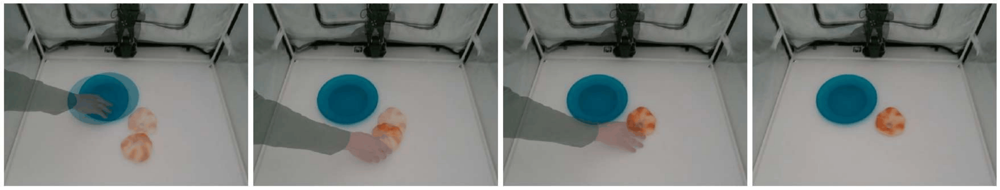

Running evaluations
Evaluation script
Use the evaluation script benchmark.py to run a policy across predefined ID or OOD tasks, with predefined reference images. Refer to the table below for all CLI flags.
Currently, the script supports the following models: {act,smolvla,dit,xvla,pi0,pi05}. Support for other VLA models will arrive soon. Feel free to modify the script to implement other VLA models of your liking.
Inside your virtual environment, run:
python benchmark.py \
--policy-type pi0 \
--policy-path lerobot/pi0_base \
--policy-from-hub \
--run-all-tasks \
--task-subset ID \
--iterations 5 \
--eval-follower-calib-dirs calibration/robots/so101_follower \
--eval-follower-ports /dev/ttyACM1 \
--eval-follower-ids so101_follower_arm \
--eval-top-indexes 4 \
--eval-wrist-indexes 14 \
--reset-mode fixed \
--reset-action-file arm_reset.json
| Flag | Description |
|---|---|
--policy-type <model> |
Selects the policy family to evaluate. Currently supported models: {act,smolvla,dit,xvla,pi0,pi05} |
--policy-path <path> |
Hugging Face repo ID or local path for the policy checkpoint. |
--policy-from-hub |
If --policy-path directs to a Hugging Face repo ID, include this flag. Loads policy from Hugging Face Hub instead of local directory. |
--run-all-tasks |
Runs evaluation across all 10 VLA-REPLICA tasks from task config, instead of single task. |
--task-subset <ID or OOD> |
When using --run-all-tasks, restricts evaluation to ID or OOD task subset. |
--iterations <number> |
Number of evaluation iterations per task (we used 5 in the paper). |
--eval-follower-calib-dirs <path> |
Follower calibration directory. (default: calibration/robots/so101_follower). |
--eval-follower-ports <serial port> |
Serial port for the follower robot (e.g. dev/ttyACM1) |
--eval-follower-ids <id> |
Robot ID for the follower arm. (default: so101_follower_arm) |
--eval-top-indexes <index> |
Top-camera index for the active arm. |
--eval-wrist-indexes <index> |
Wrist-camera index for the active arm. |
--reset-mode fixed |
Uses a fixed reset action instead of teleoperated leader reset (we enabled this for the paper). |
--reset-action-file <path> |
JSON file containing the normalized reset action vector required when --reset-mode fixed is used. (default: arm_reset.json) |
Evaluation process
-
After the script loads the corresponding policy and connects successfully to the followers, the follower arm will move to a consistent start position (predetermined in
arm_reset.json). An openCV GUI will pop up, overlaying the live video feed from the top camera with the proper test scene (i.e. predefined object placements) for that task. -
Grab the corresponding objects needed for that scene (i.e. red plate and bread A for the first task) and then move the objects to their reference image positions so that the live camera and overlay image are identical to each other.

benchmark.py live video evaluation GUI. The user is currently setting up the scene for the "Put bread on plate" task.
-
When the live video feed and overlay image match almost exactly, press
Enteron the keyboard to start policy inference.- During policy evaluations for the VLA-REPLICA paper, each policy is given 90 seconds to complete the task before the iteration ends.
- If the policy completes the task before 90 seconds, press
right arrow (➜)to skip to the setup phase of the next iteration. The SO-101 arm will reset back to the start position.
- Log success and/or failure behavior for each iteration corresponding to that specific task. The full list of tasks and criteron are listed below.
ID versus OOD evaluation
- ID tasks use scene layouts close to the training distribution to see how well the model learns.
- There are 10 ID tasks total, with 5 variants each, for a total of 50 ID iterations.
- OOD tasks test new colors, counts, or objects to test how well the model generalizes generalization.
- There are 8 ID tasks total, with 5 variants each, for a total of 40 ID iterations.
List of Tasks & Success Criterion
The full list of tasks is located under Task Reference
| Task | Goal | Success condition |
|---|---|---|
| Put bread on plate | Place the correct bread on the correct colored plate | Bread is resting on the target plate and the arm returns home |
| Put bowl on coaster | Place the correct bowl on the correct coaster | Correct bowl is on correct coaster and the arm returns home |
| Stack blocks | Stack the target block on the target block | Top block remains in contact for more than 2 seconds |
| Fold towel | Fold the towel in half | Edges are lifted and folded by more than 50% |
| Open oven | Open the oven door | Door stays open for 2+ seconds |
| Clean whiteboard | Wipe the board with the eraser | Eraser wipes 2+ times and is placed next to the board |
| Pour pepper | Pour the required number of shakes | Correct number of shakes poured and object returned |
| Lift bowl | Lift the correct bowl the required number of times | Correct lifting count is completed |
| Press button | Press the button the required number of times | Correct number of presses completed |
| Collect blocks | Put all blocks into the correct box | All blocks are in the target box and the arm returns home |
Next Step: Task Reference ➜